终端和 UNIX Shell：从打字机到 Job Control
课程：2026 春季学期《操作系统原理》，Hacking Day 选讲
讲师：蒋炎岩（jyy）
官方课程主页：https://jyywiki.cn/OS/2026/
官方讲义：https://jyywiki.cn/OS/2026/lect8.md
视频来源：Bilibili BV1nQXsBuEUz
版权说明：课程讲义与幻灯片归蒋炎岩所有，采用 Creative Commons BY-NC 4.0 许可；本电子书是对课堂讲授的书面化重构，保留出处与许可说明。
导语：键盘与终端的漫长演化
今天使用的终端看起来像软件界面，但它的祖先可以追溯到：
- 管风琴与水风琴键盘；
- 机械打字机；
- 电传打字机；
- Video Teletypewriter；
- VT100 终端；
- 伪终端与终端模拟器。
很多今天看似奇怪的行为，都来自这段历史：
Shift和Caps Lock；CR与LF；Tab与等宽字体；Ctrl-C、Ctrl-D、Ctrl-Z；- ANSI Escape Sequence；
- Session、Process Group 与 Job Control。
本讲从一个核心事实出发：
终端本质上只是和操作系统交换字符。
一切更复杂的行为，其实都是操作系统、终端驱动和应用程序共同解释这些字节的结果。
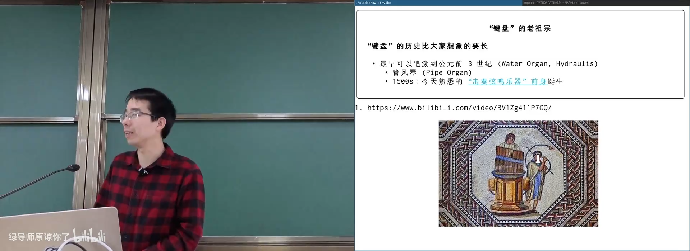
📷 键盘从乐器到计算机输入设备的历史
回到原视频 (00:00:50)
1. 打字机留下的遗产
1.1 机械打字机
打字机把按键动作转变为：
- 字锤或字模击打色带；
- 纸张留下字符；
- 擒纵机构把字车向右移动一格。
flowchart LR
K["按键"] --> M["字锤 / 字模"]
M --> R["色带"]
R --> P["纸张"]
K --> E["擒纵机构"]
E --> C["字车右移一格"]
早期机械结构同时按下两个键容易卡住。QWERTY 布局在 1860 年代被设计出来，目标之一就是降低相邻字锤冲突和打字速度。
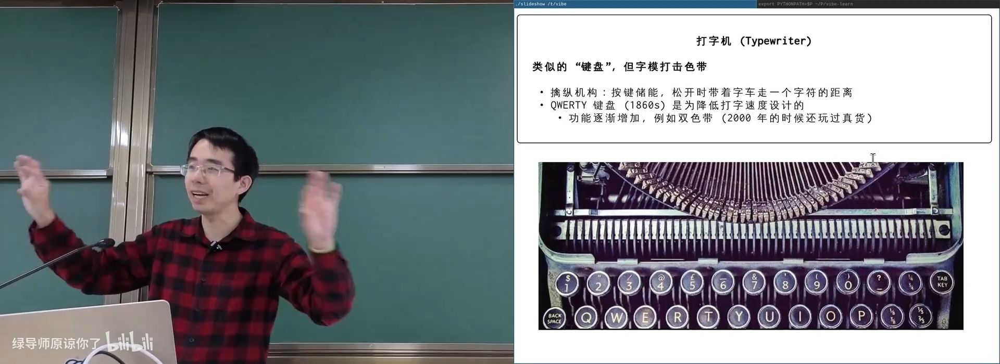
📷 打字机的字锤、色带与擒纵机构
回到原视频 (00:03:10)
1.2 Shift、Caps Lock、Tab
这些键都保留了机械时代的操作模型：
Shift：把字模或字锤向上移动，切换字符集；Caps Lock：把档位锁定在上方；Tab：移动到下一个 tab stop；- 等宽字体：每个字符推进相同距离，便于对齐表格。
1.3 CR 与 LF
\r = Carriage Return：打印头回到行首
\n = Line Feed：纸张向上移动一行
终端中，\r 不换行，只回到行首，所以后输出的字符会覆盖前一行。
UNIX 的文本换行通常只用 \n，终端驱动和显示系统负责组合出“回车 + 换行”效果；Windows 文本格式常见 \r\n。
flowchart LR
CR["\\r<br/>回到行首"] --> T["同一行覆盖"]
LF["\\n<br/>换到下一行"] --> N["新行"]
CRLF["\\r\\n"] --> T2["回到行首并换行"]
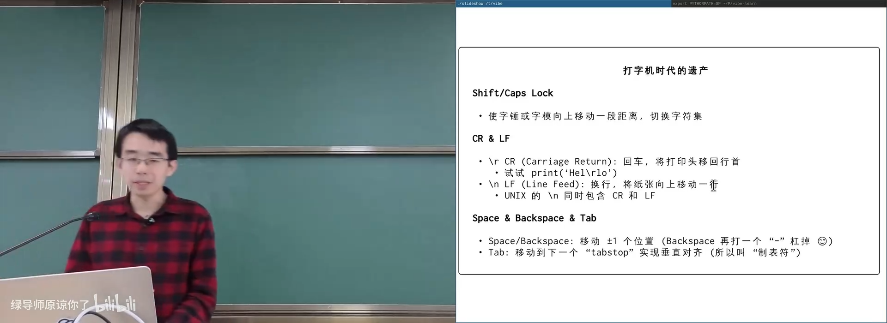
📷 CR 与 LF 在终端中的不同效果
回到原视频 (00:06:20)
1.4 Space 与 Backspace
Space：光标右移一格；Backspace：光标左移一格。
机械打字机不能真正删除字符，只能退格后重新敲击或打印“-”划掉。这一模型也影响了现代键盘命名。
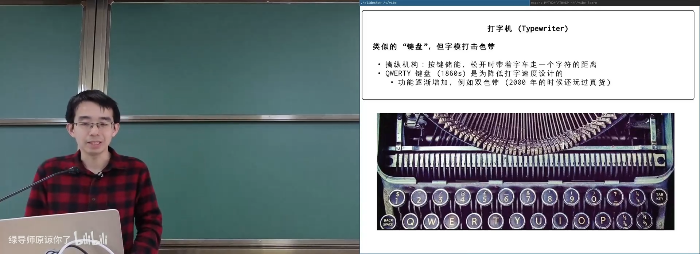
📷 QWERTY 布局与等宽字体遗产
回到原视频 (00:04:10)
2. 电传打字机与 VT100
2.1 Teletypewriter
电传打字机允许多个终端通过线路通信：
- 本地按键编码后发送；
- 远端打印文字；
- 使用 Baudot Code 等 5-bit 编码。
当计算机接入电传打字机后，人可以通过键盘输入，并通过打印机看到输出。
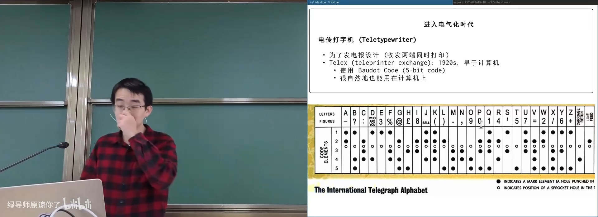
📷 Baudot Code 与电传打字机通信
回到原视频 (00:11:50)
2.2 TTY 名称的由来
TTY 来自 Teletypewriter。终端对操作系统最核心的接口可以理解为：
putchar(c);
操作系统向终端写入一个字符；终端根据字符含义移动光标、换行、响铃或解释控制代码。
2.3 VT100
1978 年的 VT100 是终端历史里程碑：
- 完整支持 ANSI Escape Sequence；
- 使用 80×24 字符布局；
- 支持光标移动、颜色、清屏和滚动；
- 成为事实上的行业标准。
flowchart LR
A["ASCII 字符"] --> V["VT100 终端"]
E["Escape Sequence"] --> V
V --> D["显示 / 光标 / 颜色控制"]
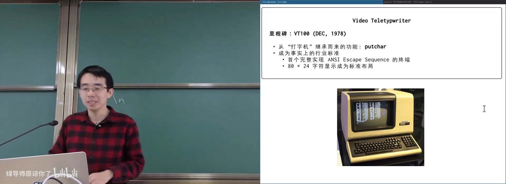
📷 VT100 与 ANSI Escape Sequence
回到原视频 (00:15:00)
2.4 Unicode 让终端重新繁荣
Unicode 提供大量符号：
- 不同高度的块字符；
- 线条与箭头；
- Emoji；
- Powerline 状态栏符号。
这些字符可以组合成图形、进度条、树状结构和终端界面。
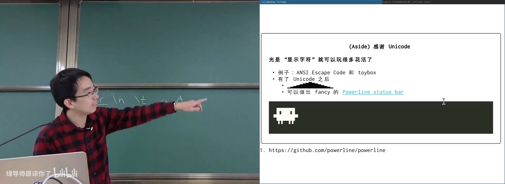
📷 使用 Unicode 字符绘制状态栏和图形
回到原视频 (00:19:20)
3. 终端作为输入设备
3.1 原始字符流
终端将按键转换成字节：
flowchart LR
K["键盘"] --> T["终端 / 终端模拟器"]
T --> B["字节流"]
B --> O["操作系统终端驱动"]
O --> P["进程"]
特殊键不会发送自己的状态：
- 按下
Shift不会发送任何字节； - 只有
Shift + A才发送大写A； - 按下
Ctrl本身也不会发送字节； Ctrl-C发送 ASCII0x03；Ctrl-D发送 ASCII0x04。
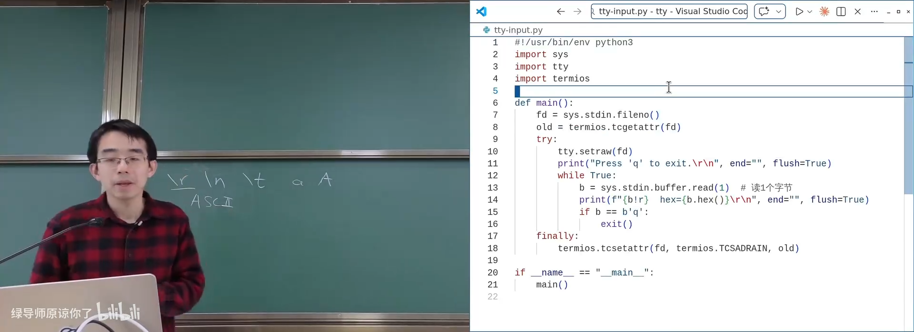
📷 直接读取终端原始按键字节
回到原视频 (00:23:25)
3.2 Ctrl-C 首先只是一个字节
终端本身并不知道“Ctrl-C 应该杀进程”。它只发送 0x03。
flowchart LR
K["Ctrl-C"] --> B["字节 0x03"]
B --> D["终端驱动"]
D --> I{"interpretation mode"}
I -->|"canonical"| S["生成 SIGINT"]
I -->|"raw"| R["交给程序读取"]
如果程序把终端配置为 raw mode，0x03 会直接进入程序，Ctrl-C 就不会自动终止它。
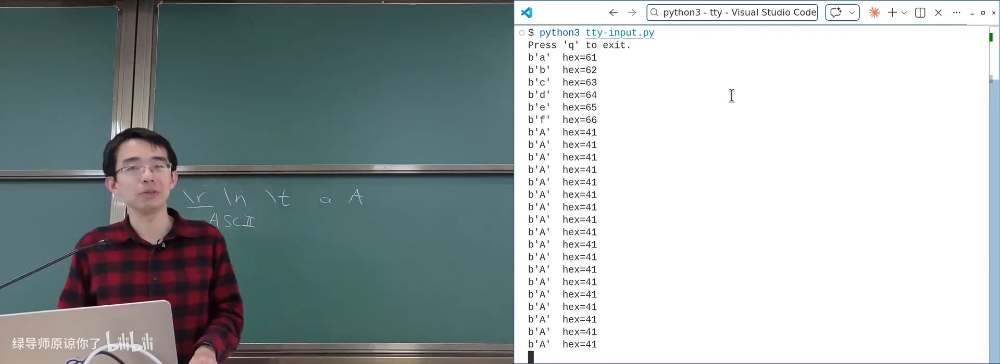
📷 Ctrl-C 在 raw mode 下只是普通控制字符
回到原视频 (00:24:17)
3.3 Escape Sequence
ASCII 没有“上、下、左、右”和颜色等控制能力，于是终端使用：
ESC + 其他字符
组成 Escape Sequence。
例如方向键会发送多字节序列，应用解析后执行移动或历史命令操作。
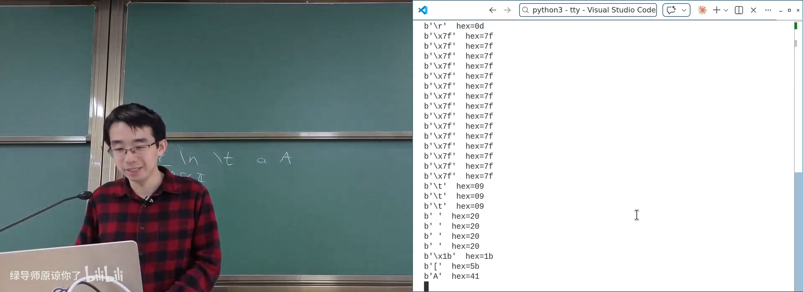
📷 方向键通过 Escape Sequence 编码
回到原视频 (00:25:52)
3.4 Canonical Mode
当运行 cat 并输入文字时，read() 不会在每次按键后立即返回：
- 终端驱动维护行缓冲；
- 退格会在驱动中编辑缓冲区；
- 回车后整行才交给程序；
- 回显由终端驱动控制。
这就是 canonical mode（行编辑模式）。
sequenceDiagram
participant U as 用户
participant D as TTY 驱动
participant P as cat
U->>D: A B C Backspace D Enter
D->>D: 编辑行为 ABD
D->>D: 回显
D-->>P: read 返回 "ABD\n"
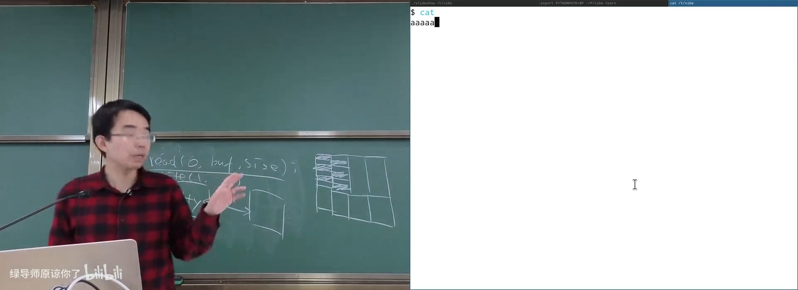
📷 canonical mode 在驱动中进行行编辑
回到原视频 (00:41:20)
4. 伪终端与终端模拟器
4.1 想要多少终端就有多少
现代系统通过 Pseudo Terminal（PTY） 虚拟化终端设备：
- PTY master：连接终端模拟器；
- PTY slave：连接 Shell 或其他程序；
- 两侧形成双向字符通道。
flowchart LR
E["Terminal Emulator"] --> M["PTY Master"]
M <--> S["PTY Slave"]
S <--> P["Shell / Application"]
创建 PTY 通常会打开 /dev/ptmx，再执行授权和解锁操作，最终得到对应的 /dev/pts/N 从设备。
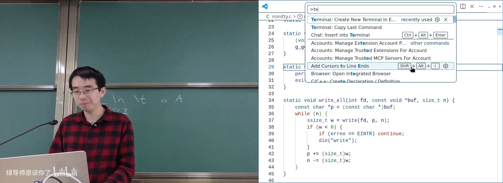
📷 伪终端主从设备和终端模拟器
回到原视频 (00:29:20)
4.2 ttyrec
如果记录 PTY 中流动的所有字符和时间戳，就可以重放终端会话：
ttyrec session.rec
ttyplay session.rec
终端界面本质上仍是字符和控制序列，因此记录字符流比录制视频更轻量。
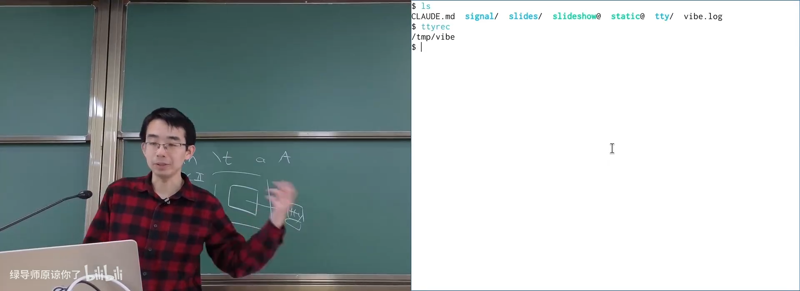
📷 ttyrec 记录并重放终端字符流
回到原视频 (00:32:50)
4.3 Sixel
VT200 时代出现了 Sixel：
- 一个字节编码 6×1 个像素是否点亮；
- 使用调色板提供颜色；
- 现代部分终端重新支持。
flowchart LR
I["位图"] --> S["Sixel 编码"]
S --> E["Escape Sequence"]
E --> T["支持 Sixel 的终端"]
T --> O["显示图像"]
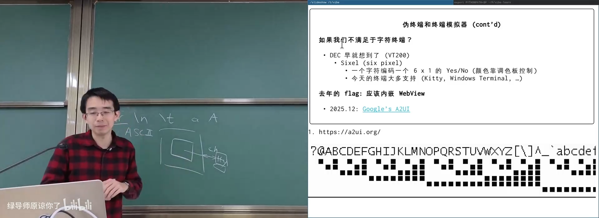
📷 Sixel 在字符终端中显示位图
回到原视频 (00:36:40)
5. 终端与系统登录
5.1 getty 与 login
系统初始化时，init 会在不同终端上启动 getty：
- 打开 TTY 设备；
- 配置波特率等终端参数；
- 把标准输入、输出、错误指向该终端；
- 提示输入用户名；
- 运行
login建立用户会话。
远程 SSH 登录也会分配 PTY，然后执行类似流程。
flowchart TD
K["Kernel / init"] --> G["getty"]
G --> O["open /dev/ttyN"]
O --> F["FD 0/1/2 -> TTY"]
F --> L["login"]
L --> S["用户 Shell / Session"]
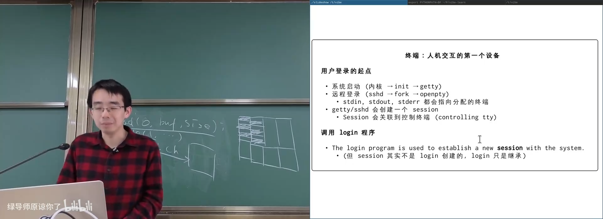
📷 getty 初始化终端并启动 login
回到原视频 (00:42:43)
5.2 TUI
字符终端可以构建完整用户界面：
- 文本框、按钮和复选框；
- 表格与滚动条；
- 主题与动画；
- Mouse Tracking；
- 终端模拟器中的各种应用。
Python textual 等框架利用 Unicode 和 ANSI Escape Sequence 构建 TUI。
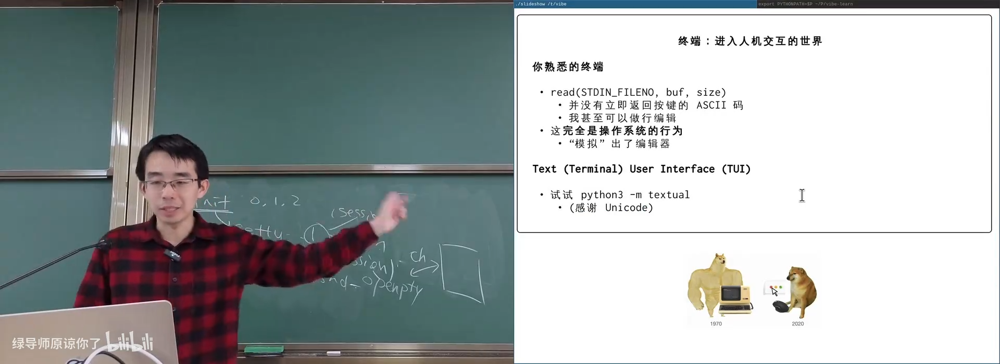
📷 Unicode 与 Escape Sequence 构建完整 TUI
回到原视频 (00:48:30)
6. Ctrl-C、信号与前台进程
6.1 信号机制
应用程序可以注册信号处理器：
signal(SIGINT, handler);
sigaction(...);
信号会在程序任意位置打断当前执行，并跳转到处理器。处理器可以：
- 清理资源后退出；
- 忽略信号；
- 设置标志继续执行；
- 改变程序状态。
flowchart LR
R["程序正常执行"] -->|"SIGINT"| H["Signal Handler"]
H --> C["清理 / 修改状态 / 忽略"]
C --> R2["返回或退出"]
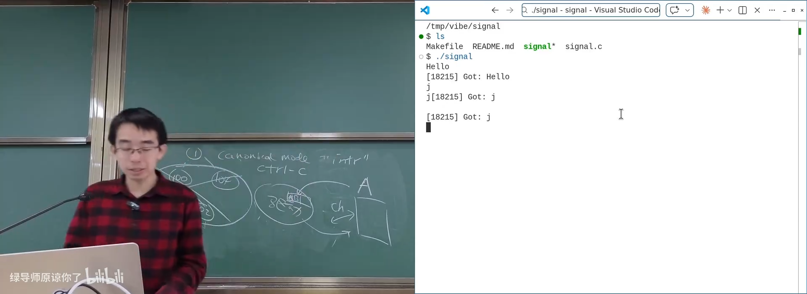
📷 程序注册 SIGINT 处理器后可以自定义 Ctrl-C 行为
回到原视频 (01:01:00)
6.2 Ctrl-C 应该发送给谁？
一个终端上可能运行庞大进程树：
flowchart TD
S["Shell"] --> P1["程序 A"]
P1 --> P2["子进程 A2"]
S --> P3["后台程序 B"]
P3 --> P4["子进程 B2"]
如果简单地向进程树所有节点发送 SIGINT：
- 可能误伤后台任务；
- 可能因孤儿进程而找不到部分后代；
- 多终端和后台任务使父子关系不足以确定目标。
UNIX 引入两个额外分组：
- Session：最大的终端会话分组；
- Process Group：前台或后台任务分组。
flowchart TD
S["Session<br/>关联一个控制终端"] --> G1["前台进程组"]
S --> G2["后台进程组 1"]
S --> G3["后台进程组 2"]
G1 -->|"Ctrl-C"| I["SIGINT"]
Ctrl-C 发送给前台进程组中的全部进程。后台进程组不会收到。
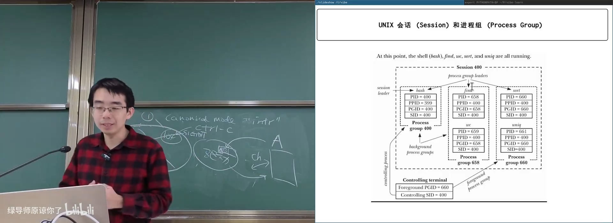
📷 Session 与 Process Group 的前后台划分
回到原视频 (01:05:40)
6.3 相关 API
setsid();
getsid();
setpgid();
getpgid();
tcsetpgrp();
tcgetpgrp();
这些 API 不够优雅，但支撑了终端多任务：
- 创建或查询 Session；
- 设置 Process Group；
- 设置终端前台进程组。
系统复杂性还体现在 UID 演化：
- real UID；
- effective UID；
- saved UID。
这些都是历史与安全需求不断叠加的结果。
6.4 Job Control
终端中的 Job Control 类似窗口管理器：
| 图形界面 | Shell |
|---|---|
| 最小化 | Ctrl-Z |
| 恢复窗口 | fg |
| 后台继续 | bg |
| 查看窗口列表 | jobs |
| 关闭程序 | Ctrl-C / kill |
stateDiagram-v2
[*] --> Foreground
Foreground --> Stopped: Ctrl-Z / SIGTSTP
Stopped --> Background: bg / SIGCONT
Background --> Foreground: fg / tcsetpgrp
Foreground --> [*]: Ctrl-C
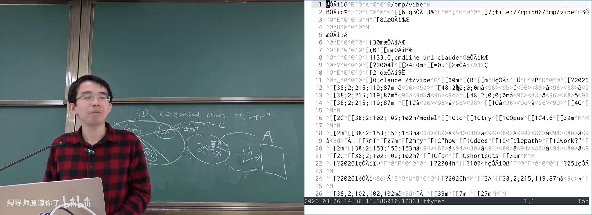
📷 使用 Ctrl-Z、jobs、bg、fg 管理终端任务
回到原视频 (01:07:20)
6.5 SIGHUP 与远程连接
Session 通常关联一个控制终端。Session Leader 退出或终端断开时，会话内进程可能收到：
SIGHUP
这解释了为什么 SSH 断开后，远程长任务有时也会终止。
解决办法：
nohup long-task &
tmux
screen
也可以使用 systemd、容器或任务队列管理长期服务。
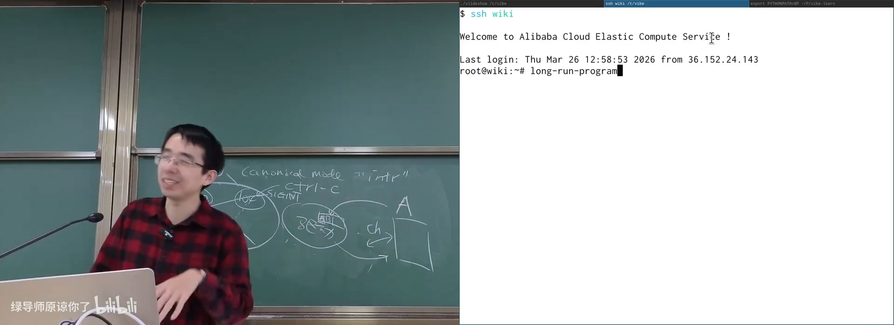
📷 SSH 断开导致进程收到 SIGHUP
回到原视频 (01:12:00)
6.6 历史方案的现代替代
现代系统有多种隔离和管理进程的方法：
- tmux / Sway 管理多个 PTY；
- Android 为每个应用分配独立 UID；
- Snap 使用 AppArmor、seccomp、namespaces；
- 容器与虚拟机用整体生命周期管理所有进程。
这些方案说明：将进程绑定到设备的旧设计并非唯一答案，但在 POSIX 兼容生态中仍然必须实现。
7. UNIX Shell：一门编程语言
(参考时间: 01:18:06)
Shell 不只是“输入命令的地方”，它是一门极简的编程语言：
- 只有字符串数据类型；
- 支持文本替换；
- 支持顺序、逻辑与管道；
- 支持重定向；
- 支持变量、循环、条件；
- 支持命令替换与进程替换。
flowchart TD
C["命令行文本"] --> P["解析与展开"]
P --> F["fork / execve"]
P --> R["open / dup2 重定向"]
P --> Q["pipe 管道"]
P --> W["waitpid 等待"]
7.1 只有一个 Shell 循环
最小 Shell 的模型接近：
while (1) {
print_prompt();
read_command();
execute_command();
}
如果暂时不考虑 Job Control，一个零依赖 Shell 可以只有几百行代码，直接建立在 fork、execve、pipe、dup2 和 waitpid 之上。
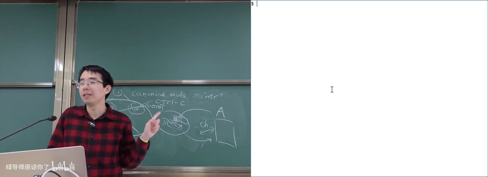
📷 最小 Shell 的主循环和系统调用组合
回到原视频 (01:19:00)
7.2 文本替换与命令替换
Shell 的核心是分阶段文本展开：
- 变量替换：
$HOME - 命令替换：
$(command) - 算术命令：
$((1 + 2)) - 进程替换：
<(command)、>(command) - 通配符展开：
*.c
flowchart LR
T["原始命令文本"] --> V["变量替换"]
V --> C["命令替换"]
C --> G["通配符展开"]
G --> W["拆分参数"]
W --> E["执行命令"]
早期 Shell 没有整数类型，算术甚至需要调用外部 expr：
expr 1 + 2
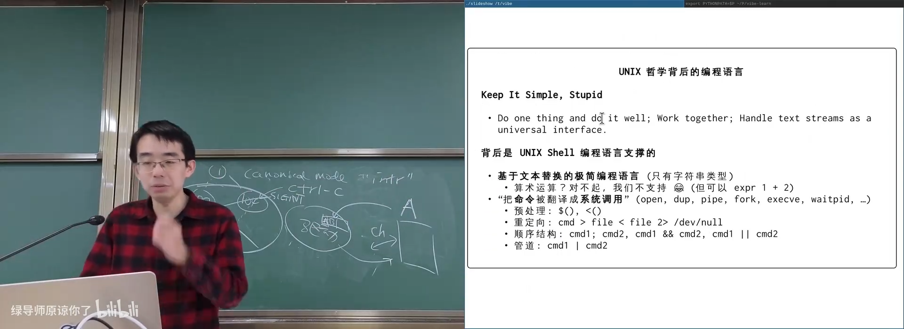
📷 Shell 基于文本替换而非类型系统
回到原视频 (01:23:00)
7.3 重定向
Shell 先由父进程打开文件，再让子进程继承描述符：
int fd_in = open(in, O_RDONLY | O_CLOEXEC);
int fd_out = open(out, O_WRONLY | O_CREAT | O_TRUNC | O_CLOEXEC);
if (fork() == 0) {
dup2(fd_in, 0);
dup2(fd_out, 1);
execve(...);
}
flowchart LR
F["open output file"] --> FD["临时 FD"]
FD --> D["dup2(fd, 1)"]
D --> E["execve(program)"]
E --> O["程序 stdout -> 文件"]
常见重定向：
cmd > file
cmd >> file
cmd < file
cmd 2> error.log
cmd > file 2>&1
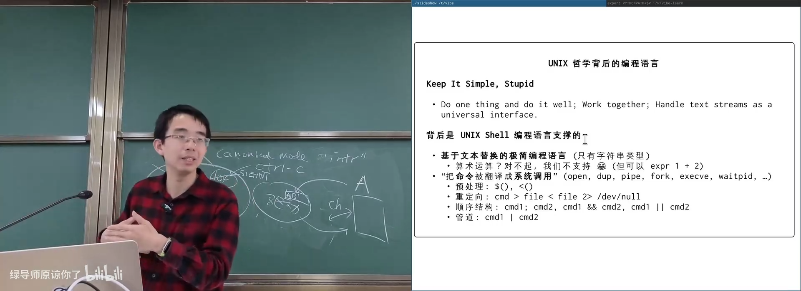
📷 通过 dup2 实现标准输出重定向
回到原视频 (01:26:30)
7.4 管道
Shell 管道的系统调用流程：
pipe()；- 创建左右两个子进程；
- 左子进程关闭读端，把 stdout 指向写端；
- 右子进程关闭写端，把 stdin 指向读端；
- 分别
execve； - 父进程关闭两端并等待。
sequenceDiagram
participant S as Shell
participant L as 左命令
participant R as 右命令
S->>S: pipe()
S->>L: fork + dup2(stdout, write)
S->>R: fork + dup2(stdin, read)
L->>R: 通过 pipe 传输
S->>S: close + waitpid
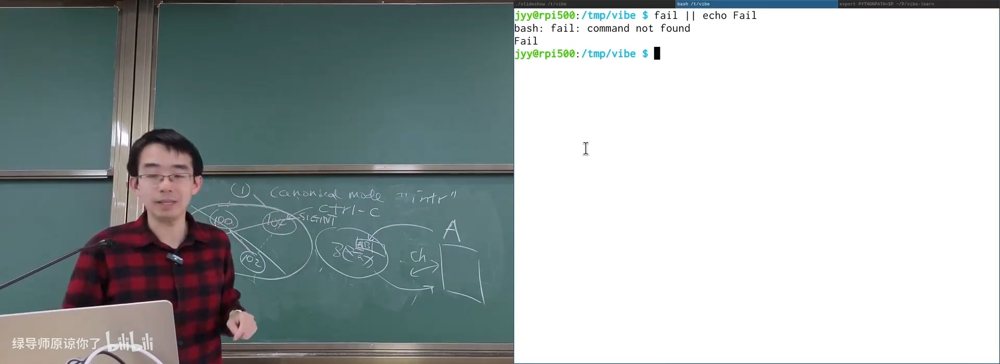
📷 Shell 通过 pipe 和 dup2 连接两个进程
回到原视频 (01:29:30)
7.5 逻辑控制与短路
cmd1 && cmd2 # cmd1 成功才执行 cmd2
cmd1 || cmd2 # cmd1 失败才执行 cmd2
cmd1 ; cmd2 # 顺序执行
flowchart TD
A["执行 cmd1"] --> S{"退出状态"}
S -->|"0，成功"| B["&& 执行 cmd2"]
S -->|"非 0，失败"| C["|| 执行 fallback"]
7.6 Shell 的缺点
Shell 是 1970 年代算力和工程能力下的折中：
- 没有强类型；
- 空格、引号和文件名容易导致解析问题；
- 不同 Shell 对边缘语法行为不同；
- 复杂逻辑很快变得难以维护；
sudo echo > file不生效，因为重定向由当前 Shell 完成，而不是sudo程序完成。
示例：
sudo echo hello > /etc/a.txt
Shell 会先以当前用户权限打开 /etc/a.txt，所以重定向仍然失败。
正确思路是让拥有权限的程序处理整个写入流程，或使用支持直接写文件的工具。
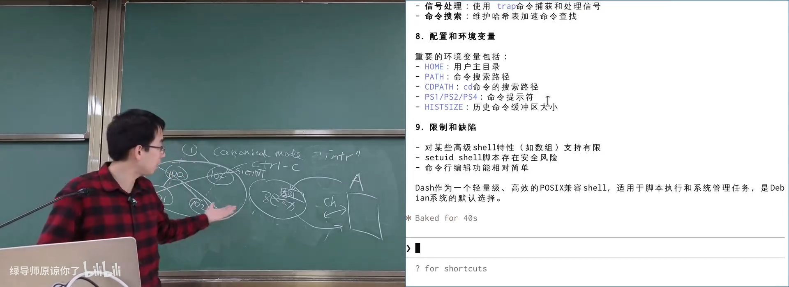
📷 Shell 文本接口的兼容性与转义问题
回到原视频 (01:33:20)
7.7 阅读手册仍然是获得想象力的来源
man -P cat sh | claude "Make a comprehensive summary"
AI 可以快速总结手册，但人的目标仍是建立“什么事情可以做到”的完整概念。Shell 手册中的特殊参数、循环、重定向和 Job Control 都能扩展想象空间。
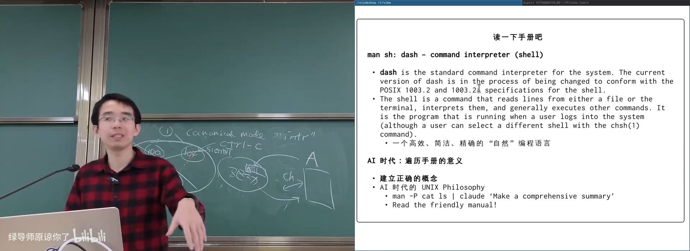
📷 将 man 手册交给 AI 生成摘要
回到原视频 (01:31:56)
7.8 Shebang
脚本以：
#!/bin/sh
开头时，内核会读取第一行，执行指定解释器，并把脚本路径作为参数传入。
flowchart LR
X["./script"] --> K["Kernel 读取 #!"]
K --> I["execve(/bin/sh, script)"]
I --> R["解释器执行脚本"]
Shebang 使文本文件成为可直接执行的脚本，是 UNIX 组合哲学的重要组成部分。
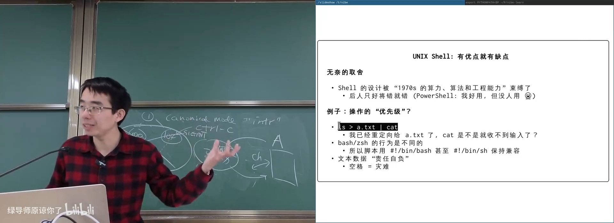
📷 Shebang 指定脚本解释器
回到原视频 (01:34:30)
8. 一个零依赖 UNIX Shell
XV6 等项目提供了极小 Shell 实现：
- 不依赖 libc；
- 使用
-ffreestanding编译； - 直接链接系统调用接口；
- 支持重定向、管道、后台执行和命令组合。
它证明：
Shell 是 Kernel 之外的“壳”，而整个 Shell 应用世界可以只建立在少量系统调用之上。
mindmap
root((Zero-dependency Shell))
进程
fork
execve
waitpid
文件描述符
open
close
dup2
管道
pipe
左右进程连接
控制
顺序
AND / OR
后台
📷 零依赖 Shell 直接建立在系统调用上
回到原视频 (01:34:30)
9. 本讲总结
- 终端的历史来自管风琴、打字机和电传打字机。
CR、LF、Shift、Tab都保留打字机语义。- TTY 是 Teletypewriter 缩写。
- ASCII 控制字符最初为电传设备设计。
- VT100 和 ANSI Escape Sequence 奠定现代终端。
- Unicode 让终端可以绘制复杂字符界面。
Ctrl-C在 raw mode 下只是字节0x03。- canonical mode 由终端驱动执行行编辑和回显。
- PTY 让系统可以创建任意数量的虚拟终端。
- 信号允许外部事件打断程序并跳转到处理函数。
- Ctrl-C 向前台进程组发送
SIGINT。 - Session 和 Process Group 解决“谁属于同一个终端任务”的问题。
- Job Control 用
Ctrl-Z、bg、fg模拟终端窗口管理器。 - Session 断开可能发送
SIGHUP。 - Shell 是一门以字符串和文本替换为核心的编程语言。
- 重定向、管道和逻辑控制最终都被翻译成系统调用。
sudo echo > file失败是 Shell 和权限边界共同作用的结果。- 零依赖 Shell 展示了系统调用如何支撑整个应用生态。
终端只交换字符。
所有复杂的输入编辑、信号、任务控制与 Shell 语法，都是建立在这些字符之上的系统设计。
附：官方参考与延伸阅读
课程与讲义：
历史与终端资料：
课程演示：
标准与阅读材料：
- Setuid Demystified
- POSIX
sh手册：man 1 sh man 2 setsidman 2 setpgidman 3 tcsetpgrpman 7 signalman 4 ttyman 4 ptsman 2 ioctl_tty
版权说明：课程讲义与幻灯片的著作权归蒋炎岩所有，采用 Creative Commons BY-NC 4.0 许可。电子书正文为课堂内容的书面化重构，脚本占位符已替换为视频画面或官方资料渲染图；引用与来源链接均保留在本页。